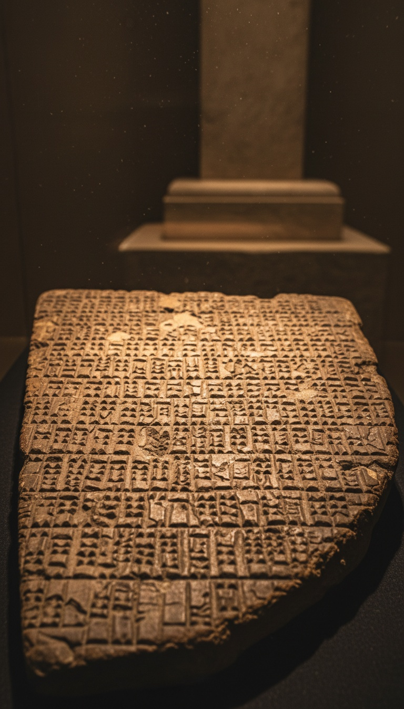

The serpent who blocked humanity's access to eternal life does not originate in Genesis. It originates in the oldest poem on earth, carved into clay tablets that predate the Hebrew text by at least two thousand years, and the tablet is sitting in the British Museum right now.
This is not interpretation. This is not a fringe reading. Tablet 11 of the Epic of Gilgamesh contains a serpent that steals the plant of immortality from a sleeping king. Genesis 3 contains a serpent that blocks humanity from eternal life in a garden. The Gilgamesh tablets date to 2100 BC. The question is not whether the parallel exists. The question is why it took the world two centuries to talk about it openly.

Tablet 11. British Museum. The Receipt.
The tablet is not lost. It is not disputed. It is not sitting in a private collection waiting to be verified. Tablet 11 of the Epic of Gilgamesh is in the British Museum, held in the Assyrian collection, acquired from the excavations at Nineveh, in the museum's possession since 1857. Any person in London can walk into the building and stand in front of it.
The text on that tablet describes Gilgamesh, the king of Uruk, diving to the bottom of the sea to retrieve a plant the Akkadian source text names as the one that restores youth to an old man. He pulls it up from the seafloor. He has it in his hands. He rests near a pool before returning home. While he sleeps, a serpent crawls out of the water and takes the plant. When Gilgamesh wakes, the serpent is gone. So is his chance at immortality.
The tablets containing this story date to 2100 BC in their oldest surviving versions. The scholars who first examined them placed even the youngest known copies at no later than 650 BC. The Genesis text, by the dating accepted at Oxford, Cambridge, and the University of Chicago's Oriental Institute, post-dates the Gilgamesh material by at minimum eight hundred years and by some comparative analyses by two thousand.
The serpent was already in the water two thousand years before it entered the garden. It already knew what it was taking.
The Parallel Is Structural, Not Vague.
The two narratives share three elements that do not overlap by accident. A serpent as the agent of loss. A direct connection between that serpent and humanity's separation from immortality. A human being who is passive at the moment the door closes. Gilgamesh sleeps. Adam stands in the garden. In both texts the serpent moves, the human does not prevent it, and access to eternal life ends.
Comparative religion scholars at the Oriental Institute, including Thorkild Jacobsen in his 1976 analysis of Mesopotamian religious literature, documented these structural overlaps in academic material that has been in university libraries for fifty years. The overlap is in the primary sources. It is not a reading. It is a match.
The plant in Gilgamesh and the fruit in Genesis carry the same function. They are the mechanism of eternal life. The serpent in Gilgamesh physically removes that mechanism from a human being. The serpent in Genesis philosophically disrupts access to it. The agent is the same. The outcome is the same. The text that records it first is Akkadian clay from Mesopotamia, not Hebrew papyrus from the Levant.
George Smith. December 3, 1872. The Room Went Silent.
The British Museum hired George Smith to sort broken clay fragments in the 1860s. He was not a trained academic. He was a bank note engraver by trade who taught himself to read cuneiform during his lunch hours in the museum's Assyrian galleries. By 1872 he had identified the flood narrative inside the Gilgamesh tablets. When he read it aloud at the Society of Biblical Archaeology on December 3, 1872, the prime minister of the United Kingdom, William Ewart Gladstone, was in the audience.
Smith identified what every subsequent generation of Assyriologists confirmed. The Mesopotamian texts carried narrative structures the Hebrew writers knew. The flood. The serpent. The garden of immortality. The loss. His discovery was the first confirmed ancient parallel to a biblical narrative ever found. The response from the theological establishment was not to celebrate the discovery. It was to construct an argument about the direction of borrowing.
Smith published his analysis in The Chaldaean Account of Genesis. The tablets had been sitting in the British Museum since 1857, brought from the ruins of Nineveh by Austen Henry Layard. They sat in crates for fifteen years before anyone translated them. The serpent had been there the whole time.
The Scholars Expected the Bible to Be Older.
Smith's own account documents his initial assumption. He expected, as every 19th-century European scholar expected, that the biblical texts would be the source and the Mesopotamian texts the derivative. The tablets reversed that assumption in a single reading session. He found the same story. In a language older than Hebrew. On clay older than any surviving manuscript of Genesis. He describes the recognition without ambiguity in his own published record.
The British Museum's catalog documentation for the Gilgamesh tablets acknowledges the parallel without qualification. The institution holding the tablet does not dispute the timeline. The scholarship produced by the museum, by Oxford, by the Oriental Institute, and by every Assyriology department in Europe places the Gilgamesh material before the Genesis material. This is the institutional consensus. The fringe position is that the direction of borrowing ran backward against the dates.
Copenhagen, 2026. The King Was Real.
In 2026, researchers at the University of Copenhagen published findings confirming that Gilgamesh was a historical king of Uruk. The confirmation came through archaeological stratigraphy and cuneiform administrative records from the Early Dynastic period of Sumer, placing his reign at approximately 2700 BC. The research extended the historical baseline of the Gilgamesh tradition backward, not forward. The story is older than the scholars already thought it was.
A real king. A real city. A real set of events recorded in poetry that became the oldest surviving literary work in human history. The Copenhagen findings did not prove the serpent was literal. They proved the tradition was rooted in a historical figure whose life was being documented by scribes while the ancestors of the Genesis writers were centuries away from putting anything down in writing.
What the Serpent Was Doing Before Eden.
The serpent in the Gilgamesh tablets does not speak. It does not reason. It does not persuade. It moves out of water in the night and takes. The serpent in Genesis speaks, argues, and manipulates. Two different literary treatments of the same archetype. The Akkadian version is older. The behavioral escalation from silent thief to philosophical provocateur runs in one direction on the literary timeline.
The British Museum has the earlier version. On clay. In a locked case. Translated, catalogued, and available to anyone who asks for the guide in the Assyrian galleries. The receipt is not hidden. The receipt is the exhibit.
Tablet 11 is not the only tablet. The British Museum holds fragments of Gilgamesh across twelve tablets, and scholars at the University of Tubingen have been assembling new fragments since 2014. With each assembly the text gets older and the parallels get denser. The serpent shows up in more places than Genesis acknowledges. The immortality plant is not the only thing it takes.
What was in the tablets that did not survive? The Nineveh library of Ashurbanipal, where these tablets were found, was one of the largest collections of written knowledge in the ancient world. Fire destroyed most of it in 612 BC. What burned that night is a question no institution is funding the answer to. The serpent was already old when the library was built. What it took before the tablets were written down is not in any museum. That part of the story has not been found yet.
Before you go
7 books the Vatican doesn't want you reading. Free PDF — the texts they cut, with sources. Joined by 140+ Inner Circle members.
No spam. Unsubscribe anytime.
Go deeper
The Hidden Canon, Vol. I — Enoch. Jubilees. Thomas. Mary. Judas. 90 pages, 14 chapters, every receipt cited. The books your Bible quietly removed.
Read the Canon →Books that informed this investigation
As an Amazon Associate, Hidden Epoch earns from qualifying purchases. Cost to you: nothing.
Research safely
The VPN we use to research without being tracked. First 3 months free.
Get NordVPN →